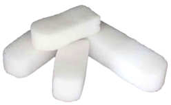

Tissue Dissection
Cutting or separating tissue to facilitate surgery.
U ltrasonic Coagulation
Coagulation of tissue using ultrasonic waves.
V aporization
Conversion of tissue into vapor by applying high energy.
Vessel Sealing
Technique to close blood vessels using energy-based devices.
Voltage Regulation
Control of electrical voltage to ensure safe and effective coagulation.
W attage
Measure of electrical power used in surgical devices.
Absorbable Foam
Foam that gradually dissolves and is absorbed by the body.
Absorbable Nasal Packing
Nasal packing material that gradually dissolves and is absorbed by the
body.
B alloon Catheter
Catheter with an inflatable balloon used for nasal packing or tamponade.
Absorbency
Ability of packing material to soak up fluids.
Adhesion Prevention
Techniques used to prevent tissues from sticking together during healing.
Airflow Restoration
Techniques to restore normal airflow through the nasal passages.
Airway Patency
Maintenance of an open and unobstructed nasal airway.
Anterior Epistaxis
Nosebleed occurring in the front
part of the nasal cavity.
Anterior Nasal Packing
Packing placed in the front part of the nasal cavity.
Anterior Packing
Packing placed in the front part of the nasal cavity.
Anti-Adhesion
Barriers
Materials used to
prevent tissues
from sticking
together post-surgery.

Antibiotic Soaked Packing
Nasal packing impregnated with antibiotics to prevent infection.
Balloon Catheter
Catheter with an inflatable balloon used for nasal packing or tamponade.